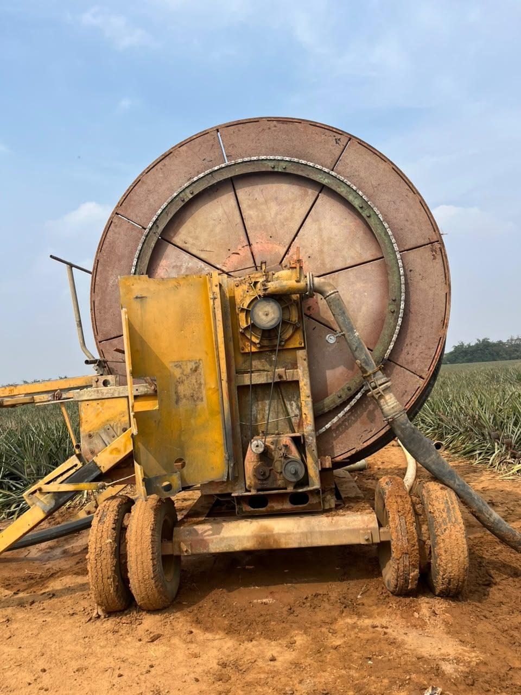
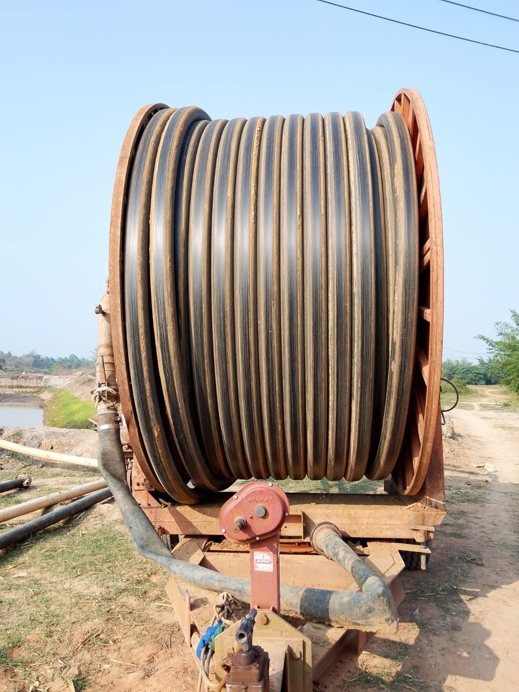
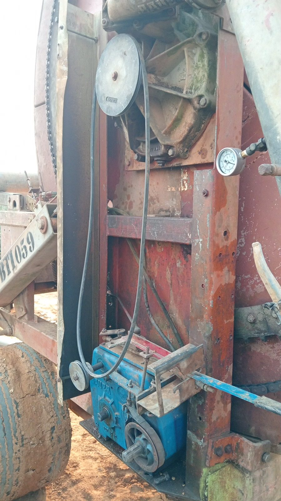
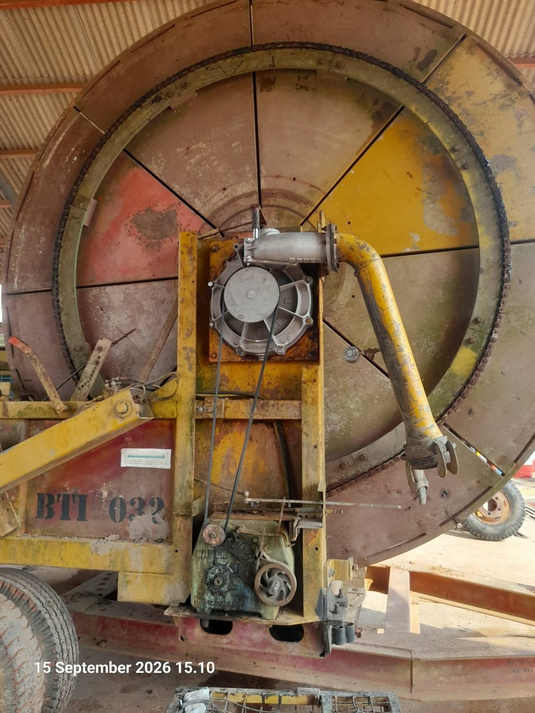

Menyiapkan model 3D…
Explorator sparepart interaktif • sketsa 3D dari katalog Ersatzeilliste 827 9909




Menyiapkan model 3D…
End suction volute pump • brosur FS513CT-R0E • material & kode internal Sheet2
Hose travel irrigator • manual 2018-02-01 • material & kode internal Sheet2
Sumber: PDF Ersatzeilliste Bauer Rainstar E (E1–E5) 827 9909 VI-2011 & spreadsheet ABC INDIKATOR MATERIAL (Sheet1/Sheet2).